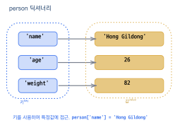
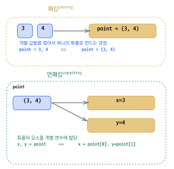
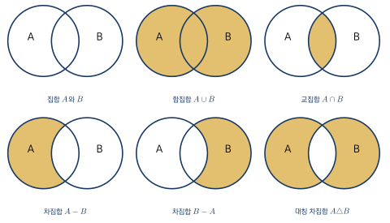
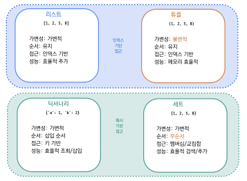

딕셔너리, 튜플, 집합
- 딕셔너리로 키-값 쌍 데이터를 저장·검색할 수 있다.
- 튜플의 불변성을 이해하고 적절한 상황에 활용할 수 있다.
- 집합 연산으로 중복 제거와 합·교·차집합을 구할 수 있다.
- 문제에 적합한 자료형(리스트·튜플·딕셔너리·집합)을 선택할 수 있다.
앞 장에서 배운 리스트는 여러 데이터를 순서대로 저장하고 인덱스로 접근하는 매우 유용한 자료구조였다. 그러나 현실 세계의 데이터가 항상 "순서 번호"로 관리되는 것은 아니다. 예를 들어 학생의 정보를 저장할 때 "이름", "나이", "몸무게"라는 의미 있는 이름으로 각 값에 접근하는 것이 0번, 1번, 2번이라는 숫자 인덱스보다 훨씬 직관적이다. 또한 데이터 중에는 "한 번 정해지면 절대 바뀌어서는 안 되는 것"(예: 좌표, 요일)도 있고, "중복이 없어야 하는 것"(예: 출석 명단, 태그 목록)도 있다.
파이썬은 이러한 다양한 요구에 대응하기 위해 리스트 외에도 딕셔너리(dictionary), 튜플(tuple), 집합(set)이라는 세 가지 자료구조를 제공한다. 딕셔너리는 키와 값의 쌍으로 데이터를 관리하여 "이름표로 물건을 찾는" 방식을 구현한다. 튜플은 리스트와 비슷하지만 한 번 생성되면 내용을 변경할 수 없는 불변 자료형이다. 집합은 수학의 집합과 같이 중복을 허용하지 않고 합집합, 교집합 같은 집합 연산을 지원한다.
이 장에서는 각 자료구조의 생성 방법과 주요 연산을 배운 뒤, 마지막으로 네 가지 자료형을 종합적으로 비교하여 "어떤 상황에서 어떤 자료형을 선택해야 하는가"에 대한 판단 기준을 세운다. 자료형의 특성을 정확히 이해하고 적절히 선택하는 능력은 좋은 프로그래머가 되기 위한 중요한 역량이다.
6.1 딕셔너리
딕셔너리dictionary는 키key와 값value의 쌍으로 이루어진 자료형이다. 리스트가 인덱스(정수)로 항목에 접근하는 반면, 딕셔너리는 사용자가 지정한 키를 이용하여 값을 조회한다. 일상생활에서 사전(dictionary)을 사용할 때 "단어(키)를 찾으면 뜻(값)이 나오는" 것과 동일한 원리이다. 따라서 딕셔너리는 "이름표가 붙은 사물함"이라고 비유할 수 있다 — 리스트가 번호로 칸을 찾는 사물함이라면, 딕셔너리는 이름표로 칸을 찾는 사물함인 셈이다.
딕셔너리의 핵심 특성은 두 가지이다. 첫째, 키와 값이 하나의 쌍으로 묶여 있다. 둘째, 키를 이용하여 값을 조회하므로 키가 중복되면 안 된다.
딕셔너리 생성
딕셔너리는 중괄호 { } 안에 키: 값 쌍을 쉼표로 구분하여 생성한다.
person = {'name': 'Hong Gildong', 'age': 26, 'weight': 82}
print(person['name'])
print(person['age'])
print(person['weight'])Hong Gildong26
82
위 코드에서 person이라는 딕셔너리는 세 개의 항목을 가지고 있다. 'name'이라는 키에 'Hong Gildong'이라는 값이, 'age'라는 키에 26이라는 값이, 'weight'라는 키에 82라는 값이 연결되어 있다. person['name']처럼 대괄호 안에 키를 넣으면 해당 값을 조회할 수 있다.

그림 6.1은 딕셔너리의 키-값 쌍 구조를 시각적으로 보여 준다. 각 항목은 키(key)와 값(value)의 쌍으로 이루어진다.
딕셔너리의 키는 문자열뿐 아니라 정수도 사용할 수 있다. 학번을 키로, 이름을 값으로 가지는 딕셔너리를 만들어 보자.
students = {2024001: 'Lee Sunsin', 2024002: 'Kim Yusin', 2024003: 'Kang Gamchan'}
print(students[2024001])
print(students[2024003])Lee SunsinKang Gamchan
리스트에서 students[0]처럼 인덱스(위치)로 접근하는 것과 비교하면, 딕셔너리에서 students\allowbreak[2024001]처럼 학번(키)으로 접근하는 것이 훨씬 직관적이다.
이것이 딕셔너리의 핵심적인 장점이다. 딕셔너리의 내부 구현과 효율성에 대해서는 David Beazley의 『Python Cookbook』에서 상세히 설명하고 있다.
항목 추가, 수정, 삭제
딕셔너리는 생성 후에도 항목을 자유롭게 추가하고, 기존 항목의 값을 수정하고, 항목을 삭제할 수 있다. 추가와 수정 모두 딕셔너리[키] = 값 형태의 동일한 문법을 사용한다. 해당 키가 존재하지 않으면 새 항목이 추가되고, 이미 존재하면 값이 수정된다.
person = {'name': 'Hong Gildong', 'age': 26, 'weight': 82}
# 항목 추가
person['job'] = 'King of Yuldo'
print(person)
# 항목 수정
person['age'] = 27
print(person)
# 항목 삭제
del person['weight']
print(person){'name': 'Hong Gildong', 'age': 26, 'weight': 82, 'job': 'King of Yuldo'}
{'name': 'Hong Gildong', 'age': 27, 'weight': 82, 'job': 'King of Yuldo'}
{'name': 'Hong Gildong', 'age': 27, 'job': 'King of Yuldo'}
삭제는 리스트와 마찬가지로 del 키워드를 사용한다. del person['weight']는 키가 'weight'인 항목 전체(키와 값 모두)를 삭제한다.
존재하지 않는 키로 접근하면 KeyError가 발생한다.
안전하게 값을 조회하려면 get() 메소드를 사용하자. get()은 키가 존재하면 값을 반환하고, 존재하지 않으면 오류 대신 None을 반환한다. 이 방법은 "키가 있을 수도 있고 없을 수도 있는" 상황에서 특히 유용하다.
print(person.get('hobby')) # 키가 없으면 None 반환
print(person.get('name')) # 'Hong Gildong' 반환딕셔너리 메소드
딕셔너리는 키, 값, 또는 키-값 쌍을 조회하는 여러 메소드를 제공한다. 가장 자주 사용하는 메소드를 표로 정리하면 다음과 같다.
| 메소드 | 설명 |
|---|---|
keys() | 모든 키를 반환한다. |
values() | 모든 값을 반환한다. |
items() | 모든 항목을 (키, 값) 쌍으로 반환한다. |
get(key) | 키에 대한 값을 반환한다. 키가 없으면 None을 반환한다. |
pop(key) | 키에 대한 값을 반환하고 항목을 삭제한다. |
clear() | 딕셔너리의 모든 항목을 삭제한다. |
person = {'name': 'Hong Gildong', 'age': 26, 'weight': 82}
print(person.keys())
print(person.values())
print(person.items())dict_keys(['name', 'age', 'weight'])dict_values(['Hong Gildong', 26, 82])
dict_items([('name', 'Hong Gildong'), ('age', 26), ('weight', 82)])
keys()는 딕셔너리의 모든 키를, values()는 모든 값을, items()는 (키, 값) 쌍의 목록을 반환한다. 이 메소드들의 반환값은 list() 함수를 통해 리스트로 변환할 수도 있다.
for문으로 딕셔너리 순회
딕셔너리의 항목을 하나하나 처리하려면 for 문을 사용한다. 리스트의 for 문이 각 원소를 순회하듯, 딕셔너리의 for 문은 각 항목의 키를 순회한다는 특성이 있다.
person = {'name': 'Hong Gildong', 'age': 26, 'weight': 82}
for key in person:
print(f'{key} : {person[key]}')name : Hong Gildongage : 26
weight : 82
for key in person:에서 반복 변수 key에는 차례로 'name', 'age', 'weight'가 대입된다. 그리고 person[key]를 통해 해당 키의 값을 꺼내어 출력한다.
딕셔너리에서 in 연산자는 키를 대상으로 검사한다. 예를 들어 'name' in person은 True이지만, 'Hong Gildong' in person은 False이다. 값이 아닌 키를 기준으로 검사한다는 점에 주의하자. 값의 존재 여부를 확인하려면 'Hong Gildong' in person.values()처럼 values() 메소드를 사용해야 한다.
딕셔너리는 어떻게 빠를까? — 해시의 개념
여기서 한 가지 자연스러운 의문이 든다. 리스트는 인덱스(정수 위치)를 알면 메모리 주소를 즉시 계산할 수 있어서 빠르게 값을 찾는다. 그런데 딕셔너리는 'name', 2024001처럼 임의의 키로 값을 찾는데, 어떻게 그렇게 빨리 찾아낼 수 있을까? 키와 값을 처음부터 끝까지 차례로 비교하는 것이라면, 항목이 많아질수록 점점 느려질 것이다. 그러나 실제로는 항목이 100개든 100만 개든 거의 일정한 속도로 값을 찾아낸다. 그 비결이 바로 해시hash이다.
해시는 어떤 데이터를 입력하면 고정된 크기의 정수를 돌려주는 함수이다. 같은 입력은 항상 같은 정수가 나오고, 입력이 조금만 달라도 전혀 다른 정수가 나온다. 예를 들어 hash('name')을 호출하면 매번 동일한 큰 정수가 반환되고, hash('age')는 또 다른 정수를 반환한다. 이 정수를 해시값hash value이라고 부른다.
딕셔너리는 내부적으로 큰 사물함 배열을 하나 가지고 있다고 상상하면 된다. 우리가 person['name']이라고 쓰면, 파이썬은 다음 과정을 거쳐 값을 찾는다.
- 키
'name'의 해시값을 계산한다. - 그 해시값을 사물함의 칸 번호로 변환한다(예: 해시값을 사물함 크기로 나눈 나머지).
- 그 칸으로 곧장 가서 값을 꺼낸다.
이렇게 하면 항목이 많아지더라도 한 번에 해당 칸의 위치를 계산해서 갈 수 있으므로, 항목 수에 거의 영향을 받지 않는다. 리스트가 1, 2, 3,...처럼 이미 정해진 번호로 칸을 찾는다면, 딕셔너리는 키를 그때그때 번호로 변환해서 칸을 찾는 셈이다. 키 자체가 곧 위치 정보로 바뀌기 때문에, 처음부터 차례로 뒤지지 않고도 원하는 항목을 즉시 찾아낼 수 있는 것이다.
딕셔너리가 빠른 이유는 키의 해시값을 미리 계산해서 저장 위치를 정해 두기 때문이다. 그래서 딕셔너리의 키로는 해시값을 계산할 수 있는 불변(immutable) 자료형 — 문자열, 숫자, 튜플 등 — 만 사용할 수 있다. 리스트는 값이 바뀔 수 있어서 키로 사용할 수 없다.
이어서 배울 두 자료형도 같은 관점에서 미리 정리해 두자. 튜플은 리스트처럼 정수 인덱스로 값을 찾는 자료형이고, 집합set은 딕셔너리처럼 해시로 원소의 존재 여부를 확인하는 자료형이다. 즉 튜플은 "리스트의 사촌", 집합은 "값만 모아 놓은 딕셔너리의 사촌"이라고 봐도 무방하다. 이 점을 미리 알고 있으면 다음 절들을 훨씬 수월하게 따라올 수 있다.
딕셔너리는 {키: 값} 형태로 생성하며, 키를 이용하여 값에 접근한다. 키가 존재하지 않는 경우를 대비하여 대괄호 접근 대신 get() 메소드를 사용하면 KeyError를 예방할 수 있다. keys(), values(), items() 메소드로 딕셔너리를 다양한 방식으로 순회할 수 있으며, in 연산자는 값이 아닌 키를 대상으로 검사한다. 딕셔너리가 항목 수와 거의 무관하게 빠른 까닭은 키의 해시값으로 저장 위치를 직접 계산하기 때문이다.
6.2 튜플
튜플tuple은 리스트와 마찬가지로 여러 값을 순서대로 저장하는 자료형이다. 그러나 리스트와 결정적으로 다른 점이 하나 있다. 튜플은 한 번 생성되면 내부 값을 변경하거나 삭제할 수 없는 불변immutable 자료형이라는 것이다.
왜 "바꿀 수 없는" 자료형이 필요할까? 현실에서도 "변경되면 안 되는 데이터"가 존재한다. 예를 들어 1주일의 요일 이름, 지도 위의 좌표, 데이터베이스에서 조회한 레코드 등은 프로그램 도중에 실수로 변경되면 심각한 오류가 발생할 수 있다. 이런 데이터를 리스트에 저장하면 누군가 days[0] = 'Funday'처럼 값을 바꿔 버릴 위험이 있다. 튜플을 사용하면 이런 실수를 원천적으로 방지할 수 있다.
튜플 생성
튜플은 소괄호 ( )로 생성하거나, 괄호 없이 값을 쉼표로 나열해도 된다.
t1 = (1, 2, 3, 4) # 소괄호 사용
t2 = 10, 20, 30 # 괄호 생략 가능
t3 = tuple([1, 2, 3]) # 리스트로부터 생성
t4 = () # 빈 튜플
print(t1)
print(t2)
print(type(t1))(1, 2, 3, 4)(10, 20, 30)
<class 'tuple'>
하나의 원소만 가지는 튜플을 생성할 때는 반드시 쉼표를 붙여야 한다. tup = (100)은 괄호가 수학의 괄호로 해석되어 정수 100이 되지만, tup = (100,)은 원소가 하나인 튜플이 된다. 이것은 초보자가 매우 자주 실수하는 부분이므로 반드시 기억하자.
tup = (100) # 정수 100 (튜플이 아님!) tup = (100,) # 원소가 하나인 튜플
튜플의 불변성
튜플은 인덱싱으로 값을 조회할 수 있다는 점에서 리스트와 동일하다. 그러나 값을 변경하려 하면 즉시 오류가 발생한다.
t = (0, 1, 2, 3, 4)
print(t[0]) # 0
print(t[-1]) # 4
# t[0] = 100 # TypeError 발생!04
t[0] = 100을 실행하면 TypeError: 'tuple' object does not support item assignment라는 오류가 발생한다.
"튜플 객체는 항목 할당을 지원하지 않는다"는 뜻으로, 튜플의 불변성을 직접 확인할 수 있다. append(), remove(), sort() 같은 원소 변경 메소드도 튜플에서는 사용할 수 없다. 튜플이 지원하는 메소드는 값을 변경하지 않는 count()와 index() 두 가지뿐이다.
패킹과 언패킹
튜플의 가장 실용적인 활용은 패킹packing과 언패킹unpacking이다. 패킹은 여러 값을 하나의 튜플로 묶는 것이고, 언패킹은 튜플의 값을 개별 변수에 꺼내는 것이다.
# 패킹
point = (3, 4)
# 언패킹
x, y = point
print(f'x = {x}, y = {y}')
# 변수 교환
a, b = 10, 20
a, b = b, a # 파이썬의 간편한 변수 교환
print(f'a = {a}, b = {b}')x = 3, y = 4a = 20, b = 10

그림 6.2은 패킹과 언패킹의 과정을 시각적으로 보여 준다. 패킹은 여러 값을 하나의 튜플로 묶고, 언패킹은 튜플의 값을 개별 변수로 분리한다.
특히 a, b = b, a는 파이썬에서 두 변수의 값을 교환하는 가장 간결한 방법이다. 다른 언어에서는 임시 변수를 사용하여 세 줄에 걸쳐 작성해야 하는 작업을 파이썬에서는 튜플 언패킹 덕분에 한 줄로 해결할 수 있다. 이것은 파이썬의 대표적인 "우아한" 문법 중 하나이다.
함수 반환값으로 활용
4장에서 배운 다중 반환값이 바로 튜플을 이용한 것이다. 함수에서 return a, b처럼 여러 값을 반환하면, 이들은 자동으로 튜플로 패킹되어 전달된다.
def get_min_max(numbers):
return min(numbers), max(numbers) # 튜플로 반환
data = [45, 23, 78, 12, 67]
minimum, maximum = get_min_max(data)
print(f'Min: {minimum}, Max: {maximum}')Min: 12, Max: 78
return min(numbers), max(numbers)에서 두 값은 튜플 (12, 78)로 패킹되어 반환되고, 호출하는 쪽에서 minimum, maximum으로 언패킹하여 각 변수에 저장한다. 이 패턴은 파이썬 프로그래밍에서 매우 자주 사용되므로 반드시 숙지하자.
리스트와 튜플 비교
리스트와 튜플의 주요 차이점을 표로 정리하면 다음과 같다.
| 구분 | 리스트 | 튜플 |
|---|---|---|
| 기호 | [ ] | ( ) |
| 변경 가능 | 가능(mutable) | 불가능(immutable) |
| 메소드 | 다양함(append, sort 등) | 제한적(count, index) |
| 용도 | 변경이 필요한 데이터 | 변경하면 안 되는 데이터, 함수 반환값 |
"어떤 때 리스트를 쓰고, 어떤 때 튜플을 쓸까?"에 대한 간단한 기준은 이렇다. 데이터가 프로그램 실행 중에 추가, 삭제, 변경될 수 있다면 리스트를 사용하고, 데이터가 한 번 정해지면 바뀌지 않아야 한다면 튜플을 사용한다. 확신이 서지 않을 때는 기본적으로 리스트를 사용하면 된다.
튜플은 소괄호 ( )로 생성하며, 한 번 만들면 값을 변경할 수 없는 불변 자료형이다. 하나의 원소를 가진 튜플은 (값,)처럼 쉼표가 필수이다. 패킹과 언패킹을 통해 여러 값을 편리하게 주고받을 수 있으며, 함수의 다중 반환값은 내부적으로 튜플 형태로 전달된다. 변경되면 안 되는 데이터에는 리스트 대신 튜플을 사용하여 안전성을 확보하자.
6.3 집합
집합set은 수학에서의 집합과 유사한 자료형으로, 두 가지 핵심 특성을 가진다. 첫째, 중복을 허용하지 않는다 — 같은 값을 여러 번 넣어도 하나만 저장된다. 둘째, 원소의 순서가 없다 — 인덱스로 접근할 수 없다.
이러한 특성은 "고유한 항목의 모음"을 다룰 때 매우 유용하다. 예를 들어 설문 조사에서 중복 응답을 제거하거나, 두 학급에서 공통으로 수강하는 과목을 찾거나, 이미 처리한 항목의 목록을 관리할 때 집합이 적합하다.
집합 생성
집합은 중괄호 { } 또는 set() 함수로 생성한다.
s1 = {1, 2, 3, 4, 5}
s2 = set([1, 2, 2, 3, 3, 3]) # 중복 자동 제거
s3 = set('hello') # 문자열로부터 생성
s4 = set() # 빈 집합 ({}은 빈 딕셔너리)
print(s1)
print(s2)
print(s3){1, 2, 3, 4, 5}
{1, 2, 3}
{'h', 'e', 'l', 'o'}
s2를 보면 리스트 [1, 2, 2, 3, 3, 3]에서 중복된 값이 자동으로 제거되어 {1, 2, 3}만 남은 것을 확인할 수 있다. s3에서는 문자열 'hello'의 각 문자가 개별 원소가 되는데, 'l'이 두 번 등장하지만 집합에서는 하나만 유지된다. 또한 출력 결과에서 원소의 순서가 입력 순서와 다를 수 있다는 점에 주목하자 — 집합은 순서가 없기 때문이다.
빈 집합을 만들 때 {}를 사용하면 빈 딕셔너리가 생성된다.
빈 집합은 반드시 set()으로 만들어야 한다. 이것은 딕셔너리와 집합이 모두 중괄호를 사용하기 때문에 발생하는 혼동으로, 파이썬이 {}를 딕셔너리로 우선 해석하기 때문이다.
중복 제거 활용
집합의 중복 제거 특성을 실전에서 가장 많이 활용하는 패턴은 "리스트에서 중복을 없애는" 것이다. 리스트를 set()으로 변환하면 중복이 자동으로 제거되고, 다시 list()로 변환하면 중복이 없는 리스트를 얻을 수 있다.
numbers = [1, 3, 2, 3, 1, 5, 2, 4, 5]
unique = list(set(numbers))
print(unique)[1, 2, 3, 4, 5]
다만 집합을 거치면 원래의 순서가 보존되지 않을 수 있다는 점에 유의하자. 순서를 유지하면서 중복을 제거해야 하는 경우에는 다른 방법을 사용해야 하지만, 단순히 "고유한 값의 목록"만 필요하다면 이 패턴이 가장 간결하다.
집합 연산
파이썬 집합의 가장 강력한 기능은 수학의 집합 연산을 그대로 지원한다는 점이다. 합집합, 교집합, 차집합, 대칭 차집합을 연산자 하나로 수행할 수 있다.
A = {1, 2, 3, 4, 5}
B = {3, 4, 5, 6, 7}
print('Union:', A | B) # 또는 A.union(B)
print('Intersection:', A & B) # 또는 A.intersection(B)
print('Difference:', A - B) # 또는 A.difference(B)
print('Symmetric diff:', A ^ B) # 또는 A.symmetric_difference(B)Union: {1, 2, 3, 4, 5, 6, 7}
Intersection: {3, 4, 5}
Difference: {1, 2}
Symmetric diff: {1, 2, 6, 7}

그림 6.3은 네 가지 집합 연산을 벤 다이어그램으로 보여 준다. 색칠된 영역이 각 연산의 결과를 나타낸다. 합집합(|)은 두 집합의 모든 원소를 합친 것이고, 교집합(&)은 양쪽 모두에 있는 원소만 모은 것이다. 차집합(-)은 A에는 있지만 B에는 없는 원소를 구하고, 대칭 차집합(\^)은 한쪽에만 있는 원소를 모은 것이다.
이 연산들은 실제 프로그래밍에서도 자주 활용된다. 예를 들어 "A 수업과 B 수업을 모두 수강하는 학생"은 교집합, "A 수업만 수강하는 학생"은 차집합, "A 또는 B 중 하나라도 수강하는 학생"은 합집합으로 구할 수 있다.
집합의 메소드
집합에 원소를 추가하려면 add(), 삭제하려면 remove() 또는 discard()를 사용한다. remove()와 discard()의 차이는 존재하지 않는 원소를 삭제하려 할 때 remove()는 KeyError를 발생시키지만, discard()는 오류 없이 무시한다는 점이다.
s = {1, 2, 3}
s.add(4) # 원소 추가
print(s)
s.remove(2) # 원소 삭제 (없으면 KeyError)
print(s)
s.discard(99) # 원소 삭제 (없어도 오류 없음)
print(s)
print(3 in s) # 원소 존재 확인: True{1, 2, 3, 4}
{1, 3, 4}
{1, 3, 4}
True
리스트에서 안전한 삭제를 위해 in으로 먼저 확인해야 했던 것처럼, 집합에서도 remove() 대신 discard()를 사용하면 존재 여부를 확인할 필요 없이 안전하게 삭제할 수 있다. 어떤 메소드를 사용할지는 "원소가 없을 때 오류를 발생시켜 알려 줄 것인가, 아니면 조용히 넘어갈 것인가"라는 의도에 따라 선택하면 된다.
집합은 중복을 허용하지 않고 원소의 순서가 없는 자료형이다. | (합집합), & (교집합), - (차집합) 등 수학의 집합 연산을 그대로 지원하며, 리스트의 중복 제거에도 set()을 활용할 수 있다. 원소 추가에는 add(), 안전한 삭제에는 discard()를 사용하자.
6.4 자료형 비교와 선택
이 장에서 배운 딕셔너리, 튜플, 집합과 앞 장에서 배운 리스트까지, 파이썬에서 여러 데이터를 관리하는 네 가지 자료형을 모두 살펴보았다. 각 자료형은 고유한 특성과 장단점을 가지고 있으므로, 상황에 맞는 자료형을 선택하는 것이 효율적인 프로그래밍의 핵심이다. 이번 절에서는 네 가지 자료형을 종합적으로 비교하고, "어떤 상황에서 어떤 자료형을 선택할 것인가"에 대한 판단 기준을 제시한다.
자료형 비교표
| 구분 | 리스트 | 튜플 | 딕셔너리 | 집합 |
|---|---|---|---|---|
| 기호 | [ ] | ( ) | {키:값} | { } |
| 순서 | 있음 | 있음 | 있음* | 없음 |
| 변경 | 가능 | 불가능 | 가능 | 가능 |
| 중복 | 허용 | 허용 | 키 중복 불가 | 불허 |
| 인덱싱 | 가능 | 가능 | 키로 접근 | 불가 |
그림 6.4은 네 가지 자료형의 핵심 특성을 한눈에 비교할 수 있도록 정리한 것이다.

상황별 자료형 선택 가이드
"어떤 자료형을 사용할까?"라는 질문에 대한 답은 데이터의 특성에 따라 달라진다. 핵심적인 판단 기준을 정리하면 다음과 같다.
순서가 있고 변경이 필요한 데이터에는 리스트가 적합하다. 학생 점수 목록, 장바구니 상품 목록처럼 원소를 추가하거나 삭제하는 작업이 빈번한 경우에 해당한다. 가장 범용적인 자료형이므로 확신이 서지 않을 때는 리스트를 기본으로 선택하면 된다.
변경하면 안 되는 고정 데이터에는 튜플을 사용한다. 좌표 (x, y), 함수의 다중 반환값, 요일 이름 등이 대표적이다. 불변이라는 특성이 데이터의 안전성을 보장해 주므로, "이 데이터는 절대 바뀌면 안 된다"는 의도를 코드에 명시적으로 표현할 수 있다.
키로 값을 빠르게 조회해야 하는 데이터에는 딕셔너리가 적합하다. 학번으로 학생 이름을 찾거나, 상품명으로 가격을 조회하는 것처럼 "이름표로 물건을 찾는" 패턴에 해당한다. 딕셔너리는 키를 이용한 조회 속도가 매우 빠르므로 대량의 데이터에서도 효율적이다. 이러한 자료구조의 시간 복잡도에 대해서는 Thomas Cormen 외의 『Introduction to Algorithms』에서 체계적으로 설명하고 있다.
중복 없는 항목의 모음에는 집합을 사용한다. 출석한 학생 명단, 고유 태그 목록, 이미 방문한 URL 목록 등이 해당한다. 집합 연산(합집합, 교집합 등)이 필요한 경우에도 집합이 최적의 선택이다.
자료형 간 변환
list(), tuple(), set() 함수를 사용하면 자료형을 서로 변환할 수 있다. 이 변환 함수들은 "입력 데이터는 리스트인데, 중복을 제거하고 싶다"거나 "딕셔너리의 키를 리스트로 가져오고 싶다" 같은 상황에서 유용하다.
# 리스트 -> 튜플 -> 집합 변환
my_list = [1, 2, 3, 2, 1]
my_tuple = tuple(my_list)
print('Tuple:', my_tuple)
my_set = set(my_list)
print('Set:', my_set)
back_to_list = list(my_set)
print('List:', back_to_list)Tuple: (1, 2, 3, 2, 1)Set: {1, 2, 3}
List: [1, 2, 3]
리스트 [1, 2, 3, 2, 1]을 튜플로 변환하면 값이 그대로 유지되지만, 집합으로 변환하면 중복이 제거되어 {1, 2, 3}이 된다. 다시 리스트로 변환하면 중복이 없는 [1, 2, 3]을 얻는다.
딕셔너리를 리스트로 변환하면 키만 추출된다. 값이나 키-값 쌍을 리스트로 얻으려면 values()나 items() 메소드를 함께 사용해야 한다.
person = {'name': 'Hong Gildong', 'age': 26}
print(list(person)) # 키의 리스트
print(list(person.values())) # 값의 리스트
print(list(person.items())) # (키, 값) 튜플의 리스트['name', 'age']['Hong Gildong', 26]
[('name', 'Hong Gildong'), ('age', 26)]
실습: 과일 가게 프로그램
네 가지 자료형을 활용한 종합 예제를 살펴보자. 이 예제에서는 딕셔너리로 과일 가격을 관리하고, 리스트로 과일 이름 목록을 만들고, 집합으로 할인 대상을 찾고, 튜플로 가격 범위를 저장한다. 하나의 프로그램 안에서 각 자료형이 자신의 강점에 맞는 역할을 담당하는 것을 확인할 수 있다.
# 딕셔너리: 과일 가격
fruits_dic = {'apple': 6000, 'melon': 3000,
'banana': 5000, 'orange': 4000}
# 리스트: 모든 키를 리스트로
fruit_names = list(fruits_dic.keys())
print('Fruit list:', fruit_names)
# 집합: 할인 대상 과일
discount_set = {'apple', 'grape', 'melon'}
available_discount = discount_set & set(fruit_names)
print('Discountable:', available_discount)
# 튜플: 가격 범위 (불변)
price_range = (min(fruits_dic.values()),
max(fruits_dic.values()))
print('Price range:', price_range)Fruit list: ['apple', 'melon', 'banana', 'orange']Discountable: {'apple', 'melon'}
Price range: (3000, 6000)
이 프로그램에서 과일 가격 데이터는 "과일 이름으로 가격을 조회"하는 구조이므로 딕셔너리가 적합하다. 과일 이름의 순서 있는 목록이 필요할 때는 리스트로 변환했다. 할인 대상 과일 중 실제로 판매 중인 과일을 찾을 때는 집합의 교집합 연산을 활용했다. 그리고 가격 범위는 "한 번 결정되면 바뀌지 않는" 정보이므로 튜플에 저장했다. 이처럼 각 자료형의 특성을 이해하고 적절히 조합하면 명확하고 효율적인 프로그램을 작성할 수 있다. 파이썬 자료구조의 고급 활용에 대해 더 알고 싶다면 Luciano Ramalho의 『Fluent Python』과 David Beazley의 『Python Cookbook』을 추천한다. 또한 파이썬의 자료형 힌트를 활용한 안전한 프로그래밍은 PEP 484에서 소개하고 있다.
리스트(변경 가능, 순서 있음), 튜플(변경 불가, 순서 있음), 딕셔너리(키-값 쌍), 집합(중복 불허, 순서 없음)의 특성을 정확히 이해하고, 데이터의 성격에 맞는 자료형을 선택해야 한다. list(), tuple(), set() 함수로 자료형을 상호 변환할 수 있으며, 실제 프로그램에서는 여러 자료형을 조합하여 사용하는 경우가 많다.
- 과일 이름(키)과 가격(값)을 저장하는 딕셔너리
fruits를 만들고,for문과items()를 사용하여 "사과: 1500원" 형식으로 모든 항목을 출력하시오.fruits = {'사과': 1500, '바나나': 800, '포도': 3000} for name, price in fruits.items(): print(f'{name}: {price}원') - 문자열
'hello world'의 각 문자가 몇 번 등장하는지 딕셔너리로 집계하시오. (힌트:dict.get(ch, 0) + 1패턴 활용)s = 'hello world' count = {} for ch in s: count[ch] = count.get(ch, 0) + 1 print(count) - 수학 수강생
math = {'Kim', 'Lee', 'Park', 'Choi'}와 영어 수강생eng = {'Lee', 'Choi', 'Jung', 'Han'}에 대해, 집합 연산으로 (a) 두 과목 모두 수강하는 학생, (b) 수학만 수강하는 학생, (c) 둘 중 하나라도 수강하는 학생을 각각 출력하시오.math = {'Kim', 'Lee', 'Park', 'Choi'} eng = {'Lee', 'Choi', 'Jung', 'Han'} print('Both :', math & eng) # 교집합 print('Math only :', math - eng) # 차집합 print('Either :', math | eng) # 합집합 - 리스트
nums = [3, 1, 4, 1, 5, 9, 2, 6, 5, 3]에서 중복을 제거한 뒤 오름차순으로 정렬하여 출력하시오.nums = [3, 1, 4, 1, 5, 9, 2, 6, 5, 3] print(sorted(set(nums))) # [1, 2, 3, 4, 5, 6, 9] - 두 점의 좌표를 튜플
(x, y)형태로 받아 두 점 사이의 거리를 반환하는 함수distance(p1, p2)를 작성하시오. 함수 내부에서는 튜플 언패킹을 활용한다. (힌트: \(d=\sqrt{(x_1-x_2)^2+(y_1-y_2)^2}\))def distance(p1, p2): x1, y1 = p1 x2, y2 = p2 return ((x1 - x2) ** 2 + (y1 - y2) ** 2) ** 0.5 print(distance((0, 0), (3, 4))) # 5.0 print(distance((1, 2), (4, 6))) # 5.0 - 숫자 리스트를 매개변수로 받아
(최솟값, 최댓값, 평균)을 튜플로 반환하는 함수stats(nums)를 작성하고, 호출하는 쪽에서는 세 변수로 언패킹하여 출력하시오.def stats(nums): return min(nums), max(nums), sum(nums) / len(nums) lo, hi, avg = stats([72, 88, 91, 65, 80]) print(f'Min: {lo}, Max: {hi}, Avg: {avg}') - 학생 이름(키)과 점수(값)를 가진 딕셔너리
scores = {'Kim': 85, 'Lee': 92, 'Park': 78, 'Choi': 90}에서 최고점을 받은 학생의 이름과 점수를 출력하시오. (힌트:max(scores, key=scores.get))scores = {'Kim': 85, 'Lee': 92, 'Park': 78, 'Choi': 90} top = max(scores, key=scores.get) print(f'Top student: {top} ({scores[top]})') - 두 리스트
a = [1, 2, 3, 4, 5],b = [3, 4, 5, 6, 7]이 주어졌을 때, 자료형 변환을 활용하여 (1) 두 리스트의 공통 원소, (2)a에만 있고b에는 없는 원소, (3) 두 리스트를 합쳐 중복을 제거한 결과를 각각 정렬된 리스트로 출력하시오.a = [1, 2, 3, 4, 5] b = [3, 4, 5, 6, 7] print(sorted(set(a) & set(b))) # [3, 4, 5] print(sorted(set(a) - set(b))) # [1, 2] print(sorted(set(a) | set(b))) # [1, 2, 3, 4, 5, 6, 7]
- 딕셔너리는
{키: 값}형태의 키-값 쌍으로 데이터를 저장하는 자료형이다. 키는 고유해야 하며, 키를 이용하여 값에 빠르게 접근할 수 있다. - 딕셔너리에 새 항목을 추가할 때는
d[새 키] = 값, 수정할 때는d[기존 키] = 새 값, 삭제할 때는del d[키]를 사용한다.get()메소드를 사용하면 키가 없을 때KeyError대신 기본값을 반환하므로 안전한 접근이 가능하다. - 딕셔너리의
keys(),values(),items()메소드로 키, 값, 키-값 쌍을 순회할 수 있으며,for key, value in d.items():패턴이 가장 자주 사용된다. - 튜플은 소괄호
( )로 생성하며, 한 번 만들면 값을 변경할 수 없는 불변(immutable) 자료형이다. 하나의 원소를 가진 튜플을 만들 때는(값,)처럼 반드시 쉼표를 붙여야 한다. - 튜플의 패킹은 여러 값을 하나의 튜플로 묶는 것이고, 언패킹은 튜플의 값을 개별 변수에 분리하는 것이다.
a, b = b, a와 같은 변수 교환이 가능하며, 함수에서return a, b처럼 여러 값을 반환하면 자동으로 튜플로 패킹된다. - 집합(set)은
{ }또는set()으로 생성하며, 중복을 허용하지 않고 원소의 순서가 없다. 빈 집합은 반드시set()으로 만든다({}는 빈 딕셔너리). - 집합은 합집합(
|), 교집합(&), 차집합(-), 대칭 차집합(\^{}) 등 수학의 집합 연산을 그대로 지원한다. 리스트에서 중복을 제거할 때list(set(리스트))패턴을 사용하면 간편하다. - 집합에 원소를 추가할 때는
add(), 삭제할 때는remove()(없으면 오류) 또는discard()(없으면 무시)를 사용한다. - 데이터의 특성에 따라 적절한 자료형을 선택한다: 리스트(순서 있음, 변경 가능), 튜플(순서 있음, 변경 불가), 딕셔너리(키-값 쌍, 키 고유), 집합(순서 없음, 중복 불허).
list(),tuple(),set(),dict()함수로 자료형 간 변환이 가능하다.
- ★★ 다음과 같은 키-값의 항목을 가지는
capital_dic딕셔너리를 생성하고,for문을 사용하여 모든 항목을 출력하시오.키(key) 값(value) 'Korea''Seoul''China''Beijing''USA''Washington DC'The capital of Korea is Seoul.
The capital of China is Beijing.
The capital of USA is Washington DC.
- ★★ 튜플
t = (10, 20, 30, 40, 50)에 대해 다음을 수행하시오.- 첫 번째 원소와 마지막 원소를 출력하시오.
- 튜플의 원소를 리스트로 변환한 후, 원소
60을 추가하고 다시 튜플로 변환하여 출력하시오. a, b, c, d, e = t와 같이 언패킹하여c의 값을 출력하시오.
- ★★ 다음 두 리스트가 주어졌을 때, 집합 연산을 활용하여 요구 사항을 수행하시오.
class_a = ['Alice', 'Bob', 'Charlie', 'Diana', 'Eric'] class_b = ['Bob', 'Diana', 'Frank', 'Grace', 'Charlie']
- 두 반에 모두 있는 학생 (교집합)
- 두 반을 합친 전체 학생 명단 (합집합)
- A반에만 있는 학생 (차집합)
- ★★★ 과일의 이름을 키, 가격을 값으로 가지는 딕셔너리를 생성하시오.
과일은 apple(5000원), banana(4000원), grape(5300원), melon(6500원)이다.
이 딕셔너리에서 가장 비싼 과일의 이름과 가격을 출력하시오.
(힌트:
max()함수와values()메소드 활용)Most expensive fruit: melon (6500 won)
- ★★ 다음 코드의 실행 결과를 예측하시오.
data = [3, 1, 4, 1, 5, 9, 2, 6, 5, 3] unique_sorted = sorted(set(data)) result = tuple(unique_sorted) print(result) print(type(result)) print(len(result)) - ★★ 딕셔너리 축약 표현(dictionary comprehension)을 사용하여 1부터 5까지의 정수를 키로, 각 정수의 세제곱을 값으로 가지는 딕셔너리를 생성하여 출력하시오.
{1: 1, 2: 8, 3: 27, 4: 64, 5: 125} - ★★★ 다음과 같은 중첩 딕셔너리가 주어졌을 때, 각 학생의 이름과 평균 점수를 출력하는 프로그램을 작성하시오.
students = { 'Hong': {'kor': 90, 'eng': 85, 'math': 78}, 'Kim': {'kor': 88, 'eng': 92, 'math': 95}, 'Lee': {'kor': 76, 'eng': 80, 'math': 84} }Hong: 84.3
Kim: 91.7
Lee: 80.0
- ★★ 집합의 메소드를 이용하여 다음을 수행하시오.
- 빈 집합을 만들고
add()로 10, 20, 30, 20을 추가한 뒤 결과를 출력하시오. discard()와remove()의 차이를 설명하시오.- 두 집합
A = {1, 2, 3, 4},B = {3, 4, 5, 6}에 대해 대칭 차집합(symmetric difference)을 구하시오.
- 빈 집합을 만들고